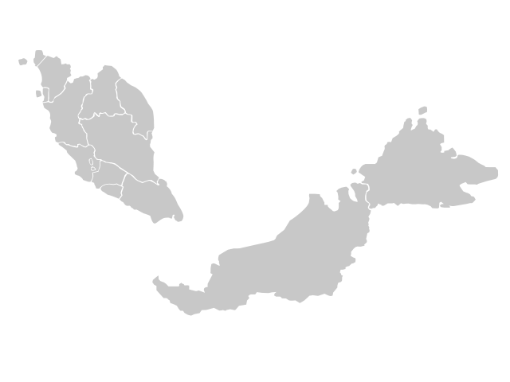

Wuhan coronavirus (COVID-19) statistics in Malaysia
Case number analysis
R(t) analysis

Reference:
Estimating COVID-19's $R_t$ in Real-Time
Kevin Systrom
https://github.com/k-sys/covid-19/blob/master/Realtime%20R0.ipynb
Estimating COVID-19's $R_t$ in Real-Time with PYMC3
Kevin Systrom
https://github.com/k-sys/covid-19/blob/master/Realtime%20Rt%20mcmc.ipynb
The Effective Reproduction Number as a Prelude to Statistical Estimation of Time-Dependent Epidemic Trends
Hiroshi Nishiura and Gerardo Chowell
https://link.springer.com/content/pdf/10.1007/978-90-481-2313-1_5.pdf
Real-time estimation of the effective reproduction number of COVID-19 in Japan
Sung-mok Jung, Andrei R. Akhmetzhanov, Kenji Mizumoto, and Hiroshi Nishiura
https://github.com/contactmodel/COVID19-Japan-Reff
Source code:
https://github.com/drxyzw/WuhanCoronavirus-Malaysia
Cross validaiton:
Rt in USA